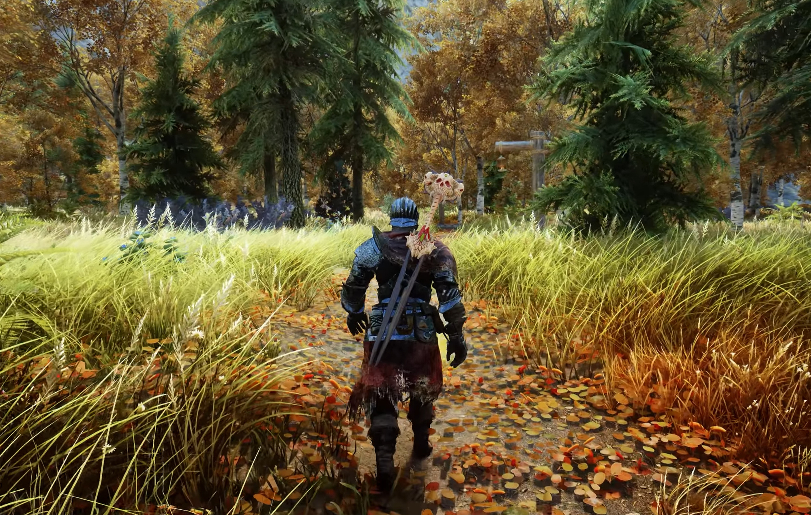

<Home page * History * gameplay * Cheats * Mods * The Future
Skyrim mods
here are some mods I would reccomend trying once you have played shyrim for a while.
Skyrim together reborn is a mod that turns skyrim into a multiplayer game with co-op gameplay, servers,Synchronization, in game chat and mod compatibility.
Skyblivion is a mod that remakes The Elder Scrolls Oblivion in Skyrim with all it's quests, story and open world. The mod is still in development but is planned to be released in 2026.
Skywind is a mod that remakes The Elder Scrolls Morrowind in Skyrim with all it's quests, story and open world. The mod is still in development.
There are many more skyrim mods on Nexus Mods